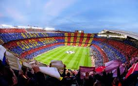
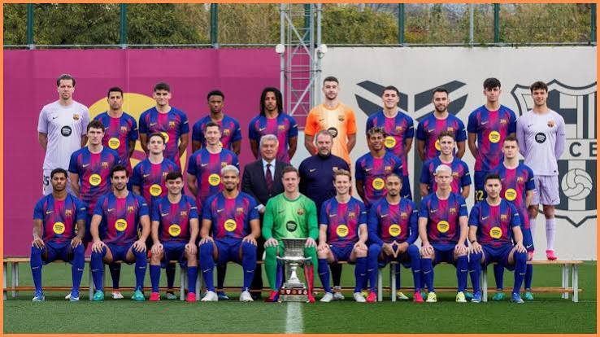

Founded
1899
Spain
Discover the history, stadium, legendary players, major trophies, records, and interesting facts about FC Barcelona.
Introduction
FC Barcelona is a professional soccer club based in Barcelona, Spain. The club was founded in 1899 and has developed into one of the most successful and famous soccer clubs in the world. Barcelona is known for its blue and red colors, attacking style of play, historic players, successful youth academy, and passionate supporters.
Barcelona's traditional home is Camp Nou, one of the most famous stadiums in European soccer. The stadium opened in 1957 and has hosted many important domestic and European matches. Camp Nou has also become an important symbol of Barcelona's identity and history.
The club is commonly called "Barça," and its supporters are known as "Culés." Barcelona's famous motto is "Més que un club," which means "More than a club." The phrase represents the club's strong connection with its supporters, the city of Barcelona, and Catalan culture.
Some of the greatest players in soccer history have represented Barcelona. Lionel Messi, Johan Cruyff, Ronaldinho, Xavi, Andrés Iniesta, Carles Puyol, Rivaldo, Luis Suárez, Neymar, and many other stars have helped create some of the most memorable teams in the club's history.

About the Club
FC Barcelona was founded in 1899 by a group of soccer players led by Joan Gamper. Gamper, who was born in Switzerland, became one of the most important figures in Barcelona's early history and helped establish the club as an important part of the city's sporting community.
Barcelona gradually developed into one of Spain's strongest teams. The club won domestic competitions and attracted a growing number of supporters. Over time, Barcelona also became closely connected with Catalan identity, giving the club cultural importance beyond soccer.
One of the most influential people in Barcelona's history was Johan Cruyff. Cruyff first joined the club as a player during the 1970s and later returned as manager in 1988. As manager, he helped develop an attacking, possession-based style of soccer that influenced Barcelona for decades.
Cruyff's team became known as the "Dream Team." Barcelona won four consecutive Spanish league championships from 1991 through 1994. In 1992, Barcelona also won its first European Cup by defeating Sampdoria at Wembley Stadium.
Barcelona's youth academy, commonly known as La Masia, became another important part of the club's identity. The academy helped develop players such as Lionel Messi, Xavi, Andrés Iniesta, Sergio Busquets, Carles Puyol, and Gerard Piqué. Several academy graduates became key members of one of the most successful teams in soccer history.
Pep Guardiola became Barcelona's first-team manager in 2008. During his first season, Barcelona won La Liga, the Copa del Rey, and the UEFA Champions League to complete the Treble. Later in 2009, Barcelona completed a historic year by winning all six major competitions available to the club.
Lionel Messi became the central figure of Barcelona's most successful modern period. His goals, passing, dribbling, and ability to create chances helped the club win numerous Spanish and European trophies. Messi eventually became Barcelona's all-time leading goalscorer.
Barcelona completed another Treble during the 2014-15 season. With Lionel Messi, Luis Suárez, and Neymar forming a famous attacking trio, Barcelona won La Liga, the Copa del Rey, and the Champions League. The achievement made Barcelona the first European men's club to complete the continental Treble twice.

Club Details
1899
Barcelona, Spain
Camp Nou
Blue and Red
Club Record
Lionel Messi is Barcelona's all-time leading goalscorer with 672 official goals for the club. Messi played for Barcelona's first team from 2004 to 2021 and became one of the most successful and celebrated players in the history of soccer.
During his time at Barcelona, Messi helped the club win numerous league championships, domestic cups, and Champions League titles. He also won multiple Ballon d'Or awards while representing Barcelona.
Success
Legendary Players
Several Barcelona players have won the Ballon d'Or while representing the club. Barcelona's list includes some of the most famous players in soccer history.
Messi later won additional Ballon d'Or awards after leaving Barcelona, but the years above are the awards he won while he was a Barcelona player.
Did You Know?